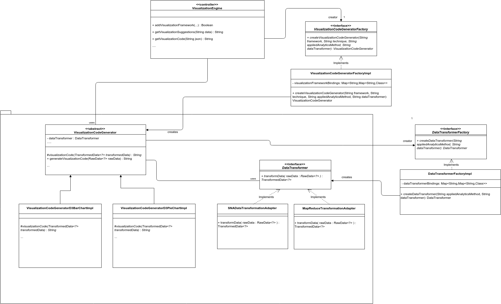

VISUALIZER: MODULE VIEWS
Primary Presentation

Element Catalog
Package Controller
A controller package to hold the HTTP RESTful endpoints for the Visualization frameworks and methods upload. In addition, the controllers also provide an endpoint to get the client visualization code to be embedded in a Webpage. Furthermore, endpoints to manage the list of applicable visualizations for a certain data set (determined by static set of visualization rules) are also included. All endpoint can be accessed by client (Analytics Engine) by making an HTTP Request.
- VisualizationEngineController: This class exposes HTTP endpoint to get the generated client Visualization code. The clients are expected to provide the framework and method details to the endpoint in order to get the correct visualization code.
- VisualizationFrameworksController: This class exposes HTTP RESTful endpoints to perform CRUD operations on the Visualization Frameworks and their Methods. Researchers/Developers can work with existing Visualization Frameworks / Methods in the Visualizer as well as upload new ones whereas the normal users can simply View the existing ones.
- VisualizationSuggestionsController: This class exposes HTTP RESTful endpoints to perform CRUD operations on the Visualization Suggestions (rules which state which visualization method represents which OLAPDataset configuration).
Package Service
The package service provides an abstraction and contains the business logic classes. These classes provide methods to be used by the Controllers.
VisualizationEngineService: This class contains methods which can be used to generate the client visualization code by providing the stored Visualization Framework id/name and its connected Visualization Method id/name.
VisualizationFrameworksService: This class provides methods to search for existing Visualization Frameworks or Methods, as well as to update their attributes or remove them completely. Furthermore, the service also contains methods to handle the upload of Visualization Frameworks. These upload methods along with the bundled JAR file require configuration data (metadata) which acts as a manifest specifying exactly which frameworks, methods and data transformers are part of the file being uploaded.
VisualizationSuggestionService: Service which provides methods retrieve and perform CRUD operations on the Visualization Suggestions. THe Visualization Suggestions are simple rules(entries) which connect an existing Visualization Method of a Visualization Framework with an OLAPDatasetColumnConfiguration.
Pakage dao
The dao package contains the classes which serve as the data access layer for handling the metadata of Visualization Frameworks,Methods and Suggestions.
DataTransformerMethodsRepository: An interface listing the methods for accessing the metadata of DataTransformers
VisualizationFrameworkRepository: Provides a list of methods for accessing the metadata of Visualization Frameworks. Contains methods for retrieving, creation and removal of frameworks
VisualizationMethodRepository: An interface listing the methods for performing CRUD operations on the metadata of Visualization Methods of a Visualization Framework
Package framework
The package framework contains the interfaces and abstract classes which are to be extended by new implementations of Visualization code generators and Data transformers
VisualizationCodeGenerator: An abstract class which contains the control flow implementation of generating visualization code for the client. This class contains two abstract methods which each new Visualization code generator will have to override, namely, the "initializeDataSetConfiguration" method and the "visualizationCode" method. The developer when overriding the "initializeDataSetConfiguration" method should specify what kind of input (OLAPDataSet configuration) and output (OLAPDataSet configuration) are expected by the visualization code generator, it should be noted that at the moment the output can left null. The overriden method "visualizationCode" contains the actual client visualization code.
DataTransformer: An interface containing list of methods which need to be implemented by each concrete DataTransformer. The DataTransformer method to transform data will be called by the VisualizationCodeGenerator to transform the OLAPDataSet data received from the client to a representation which is understood by the Visualization code generation method.
Package Model
Model package which holds all the model classes relevant to the Visualizer component.
- TransformedData: Class which is envisioned to be a base class for polymorphic datatypes which represent the data after transformation is applied to it
The following three model classes represent the properties stored in the database and details the relations they have between each other. These classes are also used as models for serialization and deserialization to/from JSON.
VisualizationFramework: Class representing the details of a Visualization Framework
VisualizationMethod: Class representing the details of a Visualization Method belonging to a Visualization Framework
VisualizationSuggestion: Class representing the details of a Visualization Suggestion. A Visualization Suggestion is a simple database entry containing a OLAPDatasetColumnConfiguration and its Visualization Method. These entries let the client receive suggestions of Visualization Methods for a given OLAPDatasetColumnConfiguration
Context Diagram

Variability Guide
- The VisualizationCodeGenerator abstract class is meant to be extended by new code generators that Researchers / Developers create. These code generators will simply return the respective HTML+JS code as a String, to be sent to clients. In addition, the code generators also need to provide the OLAPDataset that they expect as input. The OLAPDataset will just include the column configuration without the actual data. The concrete implementation of the VisualizationCodeGenerator can be submitted as a bundled JAR through the API exposed in the VisualizationFrameworksController
- The DataTransformer interface provides a skeleton of the methods that are meant to be overriden by concrete implementations which the Researchers / Developers create. These concrete implementations will act as adapters which will transform the data (input) which will be in form of the OLAPDataset to TransformedData. The TransformedData object can then be used by the various VisualizationCodeGenerator to generate the visualization code. Similar to the VisualizationCodeGenerators the concrete implementation of the data transformers(adapters) can be submitted as a bundled JAR through the API exposed in the VisualizationFrameworksController.
Rationale
- The OLAPDataset (Column configuration) has to be included via an overriden method in each VisualizationCodeGenerator. Although, this would belong in the DataTransformer it was explicitly included in the VisualizationCodeGenerator due to the reason that a single DataTransformer can be reused by many VisualizationCodeGenerators.
Related Views
- Section 4.4.2 explains the C&C Views of the Visualizer
- Section 4.2 explains the Analytics Engine, which orchestrates the interaction with the Visualizer
- Section 4.5 explains the Analytics Methods, which process the data that is to be visualized
- Section 4.6 explains the Analytics Modules, which holds Triads that allow to save configurations between Indicators, Analytics Methods and Visualizations